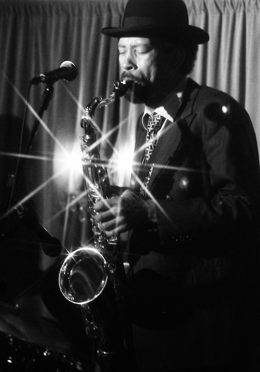

I happened upon The Fenix Project by chance when I asked my roommate
where we should go when I knew we had a different destination in mind.
Without hesitation, she replied, The Belmont Inn; so we went. When we
arrived we heard a sound that resonated through my spirit. This sound
was coming from a band known as The Fenix Project. A five piece blues
band, with an energy that I seldom see from other bands, I was instantly
attracted to them. I knew there was something there.
I approached the band with the greatest excitement and told them about
what ADNW does as a company and within a couple of months we all became
family. Since that time we have seen the band members change, making the
band unbelievably better, but the energy and the excitement remained.
Their sound, including but not limited to, drums, bass, guitar, and Fenix's
amazing sax playing fuse together to create an ambiance of pure blues genius.
Joined by many talented musicians and well known guests every Wednesday night
at The Blue Diamond, the band never disappoints. When you walk through the door,
The Fenix Project becomes the sound of blues where your soul is incapable of
feeling blue.
Myself and the entire team of ADNW are pleased and honored to be working with
such an inspirational and moving band and we hope that you will join us to
experience the feeling and passion that I first felt when I heard the notes
sang through Portland.
We hope to see you at the show!